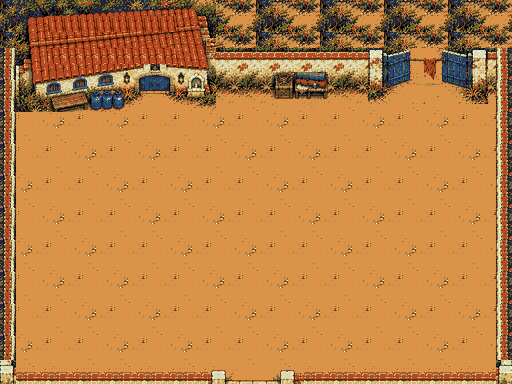
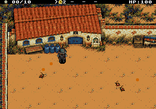
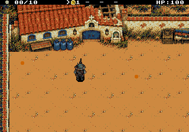
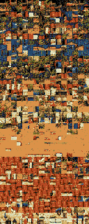

Segurar o pátio.
Dar tempo para a fuga.
Câmera elevada a60°, telhados mais aparentes e fachadas curtas, seguindo a vista dos personagens. O pátio foi ampliado na vertical, com cerca de2,8 vezes a área livre anterior. A arte agora preserva detalhes de um pixel e o HUD inteiro tem fundo opaco.
Primeira fase aprovada em21/10/2026. Os capítulos2 a6 já têm sete telas para revisão, incluindo as bifurcações. Cada novo conjunto será integrado após aprovação. As músicas existentes já estão distribuídas pela campanha.
Mapa, estados e espaço jogável
Exibição inicial em escala nativa1×. A exportação já não passa pela imagem reduzida de256 pixels nem substitui tiles por aproximações.

A linha azul representa o recorte da tela. As áreas vermelhas mostram os limites dos pés. Toda a área central e inferior está livre. Os tiros usam sua altura visível e atingem os muros; bancos e bagagens baixos não os bloqueiam. A rolagem acompanha Damião no jogo. O contorno aqui é uma sobreposição de revisão, não parte da arte.
Todos cruzam o pátio; a igreja permanece inteira. A rua de serviço continua acessível, e o diálogo confirma o que foi preservado.
Parte do telhado e da parede cai. A igreja continua reconhecível, a aparência persiste após a pausa e o diálogo apresenta o desvio pelos escombros.
Correções desta revisão
O tiro acompanha a ponta do cano no quadro exibido, inclusive parado e correndo junto às paredes. A origem já não é empurrada para dentro da arena. A margem transparente do projétil também deixa de provocar colisões prematuras. Os cantos inferiores e as pilastras do portão agora usam peças alinhadas à mesma altura.
Recortes ampliados de capturas reais da ROM, sem suavização. O disparo já avançou um passo após sair do cano. Tiros que efetivamente entram no muro continuam colidindo com ele.
A fase rodando
Captura do Genesis Plus GX com áudio da ROM: caminhada, pausa, combate e bomba. Os controles são reais. A vida é mantida para a gravação e os testes; as formações do benchmark são controladas na RAM volátil do emulador.


Partidas e testes de colisão
12 tentativas com controle automático e regras normais de vida, dano e itens: oito vitórias e quatro derrotas. Durante essas partidas, nenhuma escrita na RAM do jogo após o estado inicial. Os desaparecimentos de tiros foram confrontados com muros e inimigos: nenhuma colisão sem explicação.
Uma partida completa
Partida automatizada com vida e dano normais, usando o joypad. O vídeo anterior é a demonstração controlada do cenário; este mostra o combate até a conclusão.
Desempenho medido
| Configuração da fase | NTSC | PAL |
|---|---|---|
| Combate natural por 24 segundos | 60 FPS | 50 FPS |
| 4 inimigos + 6 tiros de cada lado, sustentados | 60 FPS | 50 FPS |
Os padrões do cenário permanecem na memória de vídeo. A câmera atualiza apenas as linhas novas do mapa, o HUD fica fixo e opaco e a bomba troca apenas o trecho da igreja. O limite de quatro inimigos e seis tiros por grupo é aplicado pela fase.
O teste fora desse orçamento, com oito inimigos e 32 tiros, ainda causa queda. Esses números também estão nos relatórios. Testes em emulador; console físico ainda não verificado.
A música do lugar
A Ladainha de Ferro acompanha a igreja e a defesa dos refugiados. O andamento cresce com a ameaça. As outras faixas existentes foram associadas ao abrigo, à investigação e ao avanço industrial.
Ver a distribuição de músicas e os formatos propostos para todas as fases
Atlas e arquivos de produção
640 tiles 8 × 8 compartilhados entre os dois estados. Os mapas e a paleta usam o formato do hardware; há também um arquivo para inspeção no Tiled.

A fuga aparece nos diálogos e nos elementos do cenário. Esta entrega não adiciona NPCs de evacuação animados. As artes das próximas fases estão na revisão dos capítulos2 a6 e aguardam aprovação antes da integração. A janela circular já está validada para este mundo de512×384.